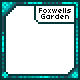

Foxwells Mod
Status: On Hold
This is a community mod designed to add content from the Foxwells Garden Community
While the mod is in its early stages there will be all sorts of things here to fit everyone, a list of added content can be found below:
(Not Yet)

Renpy VN Base
Status: On Hold
This is an open source renpy visual novel base, designed to give a easier welcome to Ren'Py than the automatic one
This contains features like chapters and aims to contain features such as character information screens and achievements
Link to the repository can be found here